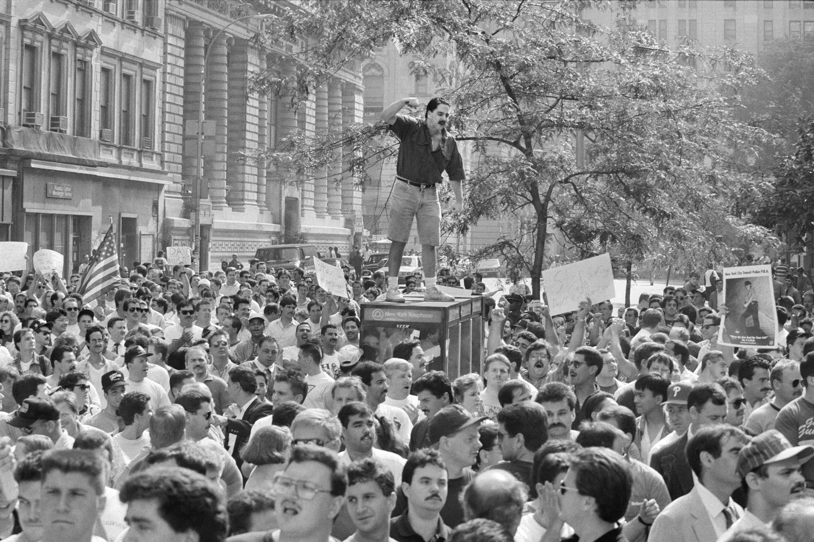

When you cast your ballot for New York City mayor in 2025, you'll be voting for the CCRB you want to see.
What is the CCRB?
The Civilian Complaint Review Board (CCRB) is a city agency that reviews complaints about police misconduct and makes recommendations about whether officers should be disciplined if they are found to have acted improperly.
The CCRB was created in 1993 in response to decades of allegations of NYPD misconduct. When Mayor Dinkins proposed a civilian agency to handle these allegations, ten thousand police rioted. They blocked traffic on the Brooklyn Bridge, attacked journalists, and chanted racist slogans about Dinkins. The agency survived these challenges.

Photo: Keith Myers, New York Times
What is a civilian complaint?
A complaint is a formal statement made to an investigator at the CCRB. Any person, regardless of their citizenship status or whether they’re a resident of New York, can file a complaint. The four primary allegations against NYPD officers are excessive force, abuse of authority, discourtesy, and offensive language. If you believe you have been a victim of police misconduct, you can file a complaint here.
Who is part of the board?
The board is designed to consist of 15 members. Five seats are appointed by the Mayor, five by the NYC City Council, three by the Police Commissioner, one by the Public Advocate, and the Chair is jointly appointed by the Mayor and City Council.
No member of the board is allowed to have a background in law enforcement, other than those designated by the police commissioner, and none may be public employees or serve in public office. They serve three-year terms, which can be and often are renewed. Board members are entitled to receive payment for every session, but some choose to serve free of charge to the city.
Under the Adams administration, the board has been reduced by over 25% due to vacancies. Over a thousand cases are ruled on by sub-panels of the board every month, and in this diminished state their work becomes more difficult, and less consideration can be given to every case. A rushed process benefits neither the accused officers or the New Yorkers who have filed a complaint.
The previous chair of the CCRB, Arva Rice, resigned in July 2024 and the position remains unfilled as of December. According to the New York Times, she was pressured to resign by Philip Banks III, the deputy mayor for public safety, after she criticized police officials for delaying an investigation into the fatal shooting of a Bronx man by police. In order to function as intended, the agency needs a chair as well as a full set of board members, and the mayor is currently leaving two of his own appointed seats empty in addition to the chair position. For more information about the board's composition and members, visit the CCRB's website.
CCRB Complaints Overview
Substantiation Outcomes by Administration
Several types of consequences can result from the CCRB substantiating a complaint. The lightest is Command Discipline A, which typically means the officer who's been found to have acted improperly loses vacation days. The most severe outcome is the filing of charges. The officer is brought before a departmental trial, and if convicted the officer might end up suspended or dismissed. Let's look at the outcomes of CCRB rulings under the last three mayors.
The data is admittedly a little messy: in the Bloomberg era and the beginning of de Blasio's term, there were not separate categories for Command Discipline A and B, so it's difficult to know how severe those outcomes were. But we can clearly see the shrinking of the proportion of complaints that end with charges. Although the CCRB might substantiate more cases, the outcomes are generally less severe for the officers when they are found to have abused their authority.
Monthly Complaints by Mayor
Subtantiation Rate by Mayor
Complaints and Substantiation by Type
Each row shows a type of complaint. Square size shows the total number of complaints,
while color intensity indicates the substantiation rate.
Year-by-Year CCRB Complaints
Breaking down the complaints by year shows how patterns of police oversight changed over time under each administration.
The rate of substantiation has been significantly higher during Adams' term as mayor. Leaving aside substantiation, you can see that citizens are turning to the agency and filing complaints in greater numbers than in years past, almost reaching the peaks we see during the Bloomberg administration at the height of the Stop and Frisk policy.
Why should you care about the CCRB?
The CCRB has its share of critics. The agency has long been regarded with suspicion and contempt by the police, but it also has critics on the left, who argue that the CCRB exists to give the illusion of oversight without the ability to impose real disciplinary consequences.
Whichever position you take, the agency exists and will continue functioning until it is formally abolished. As New Yorkers, we live with the NYPD and we should have some say in how its officers uphold the law. Our votes for mayor will indirectly shape the composition of the board. If you want a more lenient board, you should vote for a candidate who is skeptical of police oversight; if you want a more punitive board, you should vote for a candidate who is in favor of reining in the NYPD.
When can you vote for the CCRB you want to see?
The election for mayor of New York City will be held on November 4, 2025. However, the primary elections will be held in June, and if recent years are any indication this is likely when New Yorkers will be choosing their next mayor.
Who are the candidates running in the Democratic primary?
If you want to learn more about the activities of the CCRB, the board holds public meetings where they update the public, take questions, and hear concerns related to police misconduct. The meetings are open to the public and anyone can ask a question. These meetings typically take place on the second Wednesday of each month at 4:00 PM, and every year they hold at least one meeting in each borough. If you want to speak directly to the people invested with the power to make decisions about police misconduct, you should go and speak your mind.
Other ways to shape police oversight
Elections aren't the only way to make the CCRB change course. On July 17, 2014, Eric Garner was killed by a police officer who used a chokehold to subdue him for allegedly selling loose cigarettes, a misdemeanor.
After widespread protests and pressure, the NYPD adopted several reforms, including the use of body worn cameras, and the officer who killed Garner was eventually fired. However, we can also see a shift in the CCRB's handling of similar cases:
CCRB Chokehold Complaint Substantiation Rates
The CCRB is roughly five times more likely to substantiate a case involving a chokehold now than they were before the killing of Eric Garner. This is the result of public pressure and the increased scrutiny of police misconduct brought about by New Yorkers across the city who joined together to demand change. So there's no need to wait until an election, or even for the next public meeting of the CCRB. New Yorkers can influence the way this agency does its work by simply joining together and demanding better police oversight.